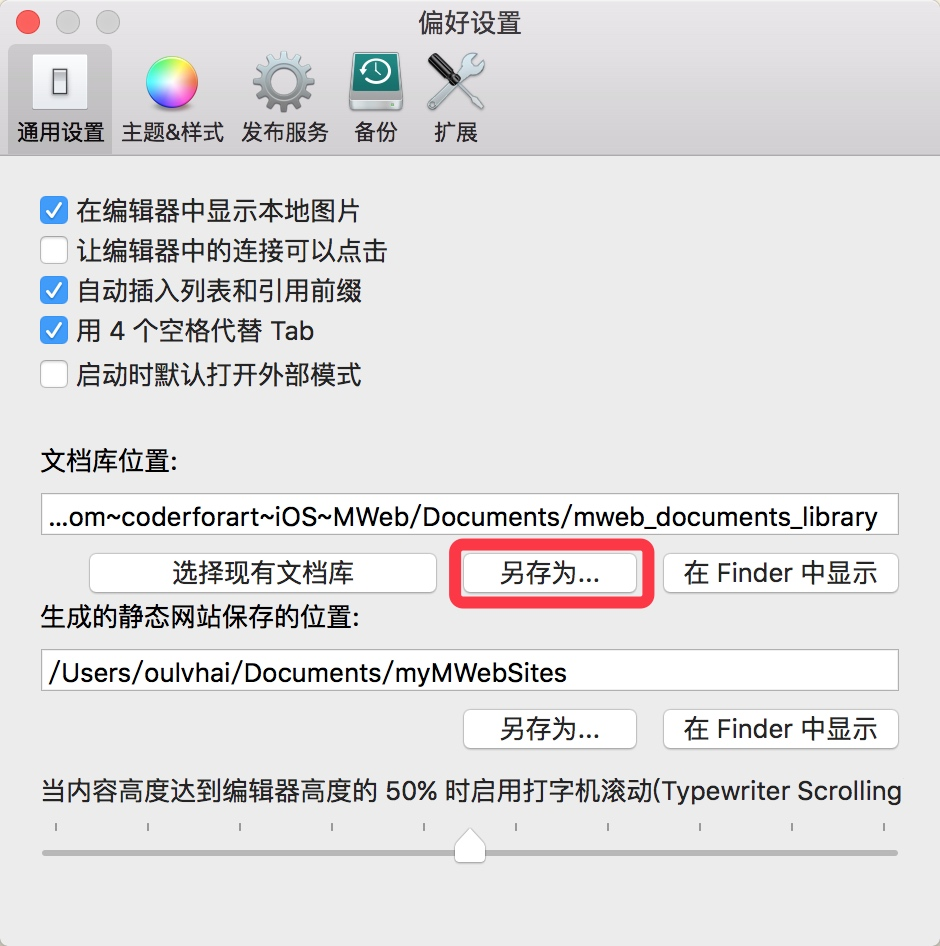
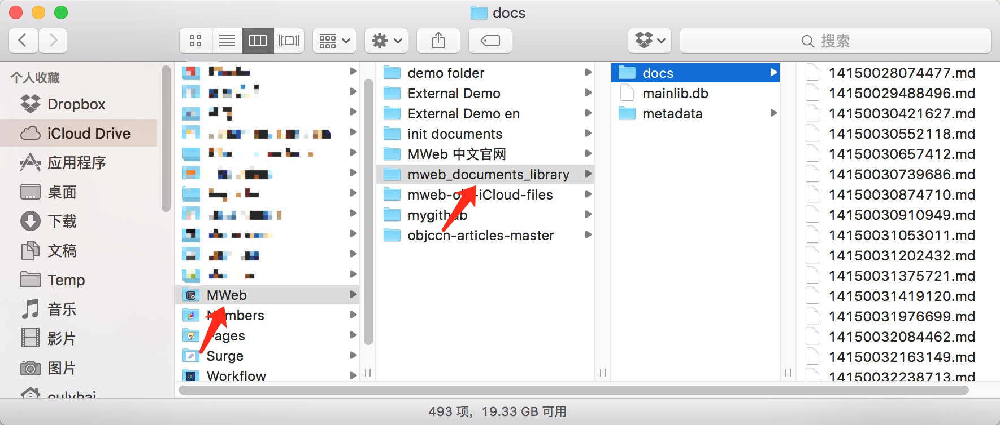
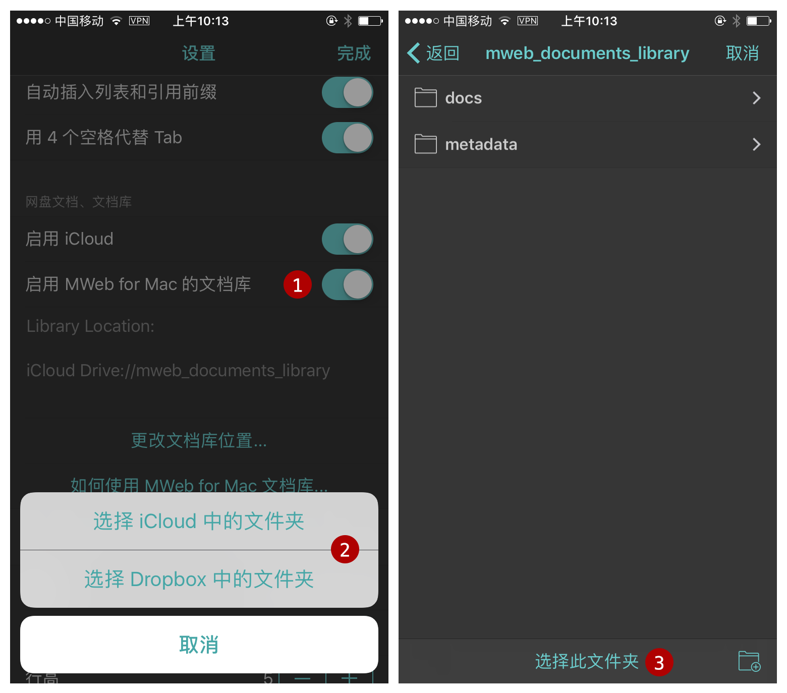
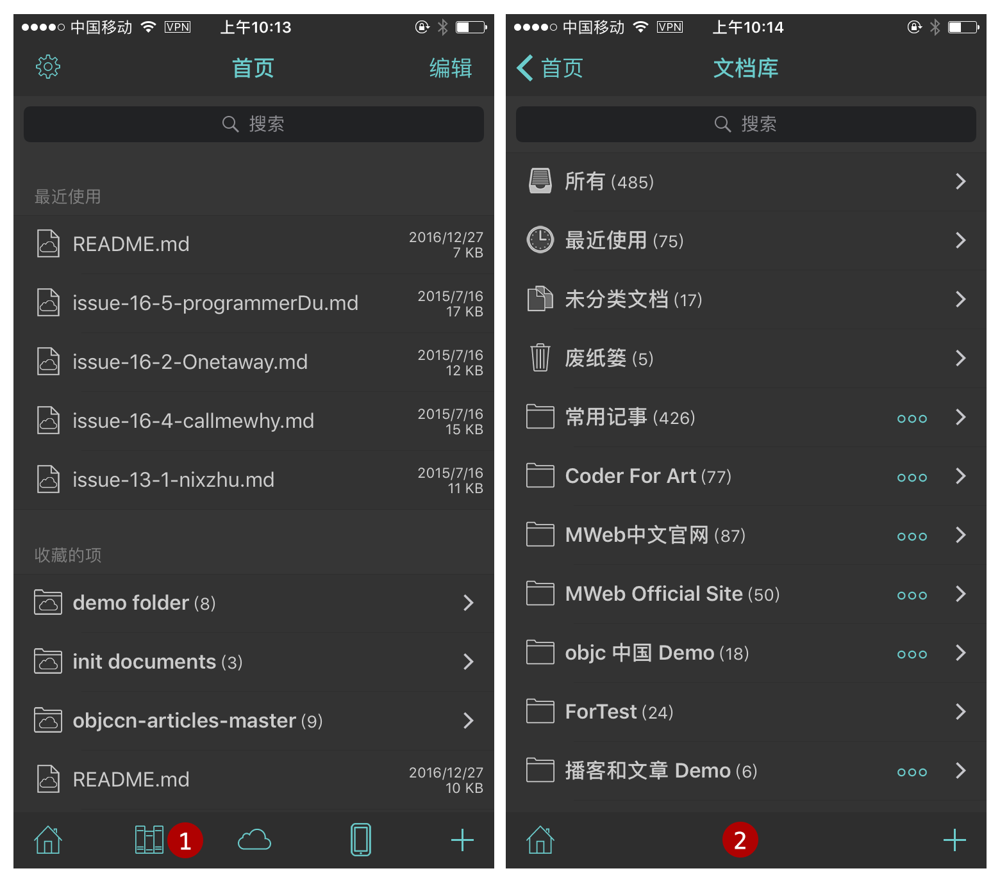

在 iOS 中如何使用 MWeb for Mac 文档库
要在 iOS 中使用文档库，必须先把 Mac 版的文档库保存到 iCloud Drive 或者 Dropbox 中，下面分别介绍一下如何做。
1. 在 Mac 中把文档库保存到 iCloud Drive 或 Dropbox
首先打开 MWeb for Mac 的偏好设置 - 通用设置（可以用 CMD + , 快捷），在通用设置 - 文档库位置中，点 “另存为...” 按钮，把文档库位置移到 iCloud Drive 的 MWeb 所属的文件夹内或者是 Dropbox 中，如下图我是放到 iCloud Drive 中的 MWeb 文件夹内的 mweb_documents_library 文件夹中。如果在你的 Mac 的 iCloud Drive 中看不到 MWeb 所属的文件夹，可以试试在 iOS 的 系统设置 - iCloud - 关闭 iCloud Drive，然后再重新打开。如果等一段时间后还是无法看到，建议使用 Dropbox。😄

这时 iCloud Drive 中的文档库的文件结构如下图所示，可以看出 MWeb 文档库的文件夹内会有一个名为 docs 的文件夹和一个名为 mainlib.db 的文件，docs 文件夹内会有所有的笔记文档。MWeb 的文档库就是由 docs 文件夹，mainlib.db 文件以及可能存在的 metadata 文件夹构成的。

2. 在 iOS 中配置 MWeb for Mac 文档库的位置
当你按上面的步骤，把文档库另存到 iCloud Drive 或 Dropbox 中并确认文档库同步完成后，打开 iOS 版 MWeb 的设置页面，转到 “网盘文档、文档库” 这里，然后先启用 MWeb for Mac 的文档库，再点 “设置文档库位置” 按钮，并选择你上一步另存到的位置，我这里的 iCloud Drive 的 mweb_documents_library 文件夹中，如下图。

设置好后，点完成，可以看到首页的底部多了一个文档库的按钮，点进去后就可以看到文档库了，如下图：

至此，在 iOS 中使用 MWeb for Mac 文档库已配置完成，在这里再提示一下，iOS 中的文档库目前只支持查看、编辑、新增文档。新增文档会在所有文档和未分类文档中。